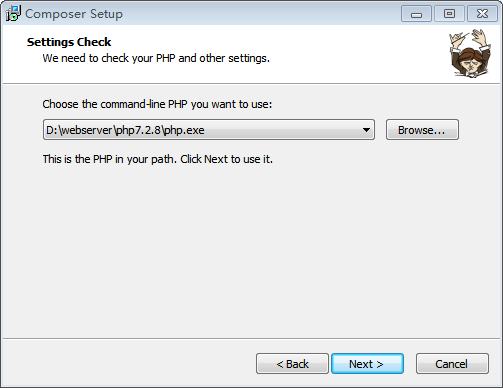
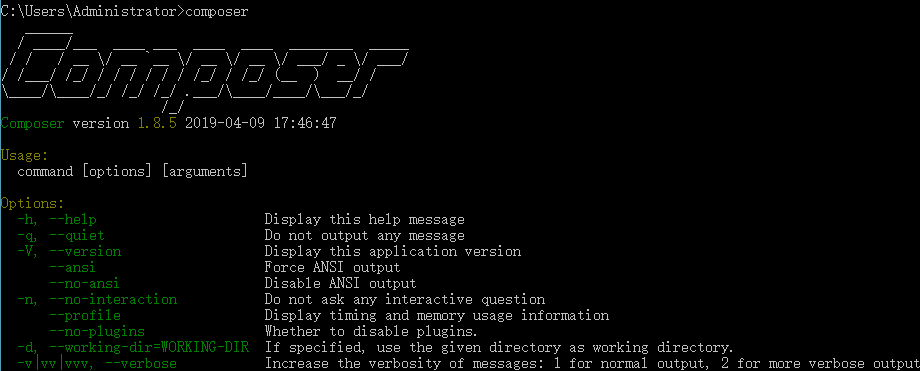
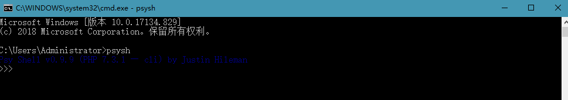
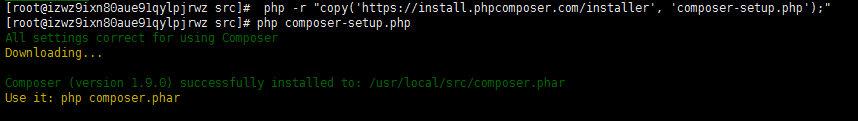

需要开启 openssl 配置：打开 php 目录下的 php.ini，将 extension=php_openssl.dll 前面的分号去掉就可以了。
https://getcomposer.org/Composer-Setup.exe
下载打开：

Win+R-->cmd-->composer
出现以下即表示已安装

composer config -g repo.packagist composer https://packagist.phpcomposer.com
composer global require psy/psysh若是国外镜像，运行composer global require psy/psysh会一直显示Changed current directory to C:/Users/Administrator/AppData/Roaming/Composer
可在安装位置C:\Users\Administrator\AppData\Roaming\Composer查看
将C:\Users\Administrator\AppData\Roaming\Composer\vendor\bin加入系统环境变量PATH

# php -r "copy('https://install.phpcomposer.com/installer', 'composer-setup.php');"
# php composer-setup.php
//移动 composer.phar，这样 composer 就可以进行全局调用
# mv composer.phar /usr/local/bin/composer
# echo "export PATH=$PATH:/usr/local/bin" >> /etc/bashrc
# source /etc/bashrc
# composer -v //切换为国内镜像,出现黄色警告不影响操作
# composer config -g repo.packagist composer https://packagist.phpcomposer.com
//记得时常更新 composer
# composer selfupdate
//tp5为项目名称
composer create-project topthink/think tp5 --prefer-distcomposer require --dev phpunit/phpunit